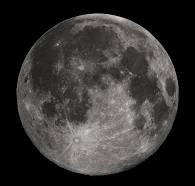
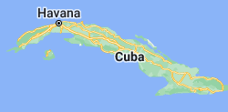
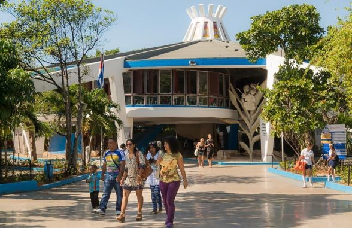

I'm Andrew, some kid who is awful at coding and is equally awful at being funny. I may be bad at coding, but i'd say i'm pretty good at that art stuff. My genius pains me. Anyway, here's some places i'd go:
1. NOT the moon

The moon is made of lies. It tricks you into a false sense of security with promises of free cheese, but do not fall for this. The moon is an imposter. And what's with the different personalities? First it's a rabbit, then it's some guy! Personally, when the sun explodes I'd rather go to Mars.
2. Donkey Kong Country

Donkey Kong Country is where the titular game "Donkey Kong Country" takes place. But where is this so called "Donkey Kong Country"? It appears on no maps, including scans of the earth. This is because the government purposefully edits out every single instance of Donkey Kong Country to hide the facts from the citizens. This is why we should overthrow our current government and establish a communist utopia where the workers shall rise and remain free.
3. Cuba

Cuba is a lovely island country that just seems like a nice place to visit, ignoring the fact that it's anti-usa-freedom-cheeseburger (aka communist)! Did you know that the CIA attempted to poison Fidel Castro's milkshake once? And that Fidel Castro was incredibly obsessed with dairy, to the point where he opened a large ice cream parlor specifically because he loved the stuff? Yeah, Cuba is kind of interesting. Oh, not convinced that's a real thing? Here's a picture:

And that's all the places i'd like to go! Every other place is inferior, and if you don't agree with me, you are categorically wrong! Have a deal-tastic day, and feel free to try these buttons.